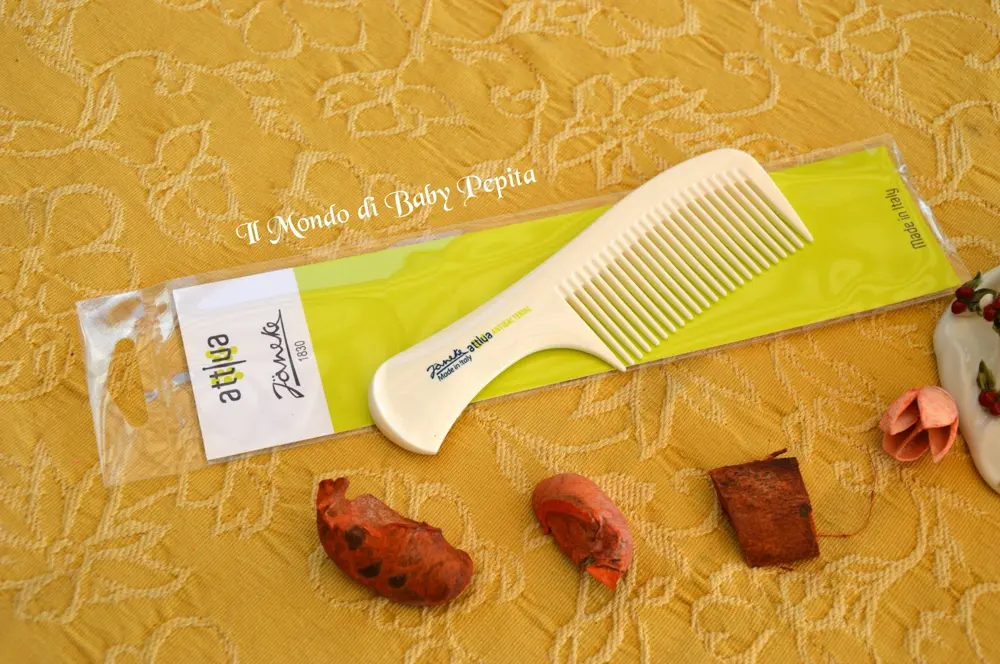
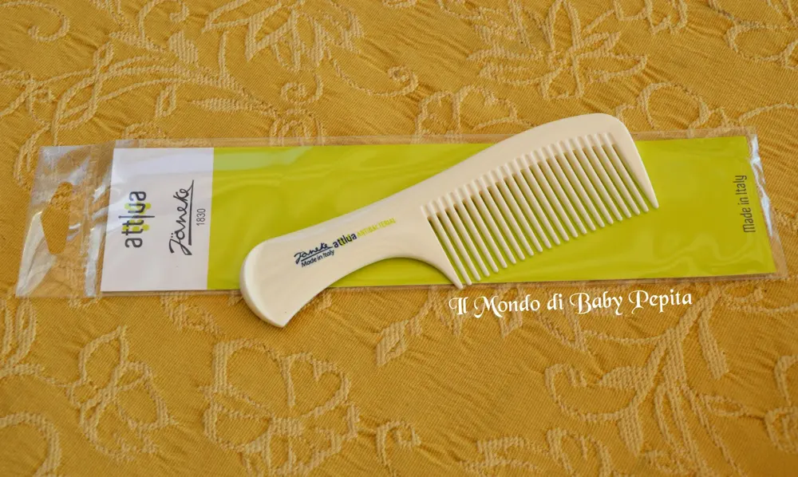
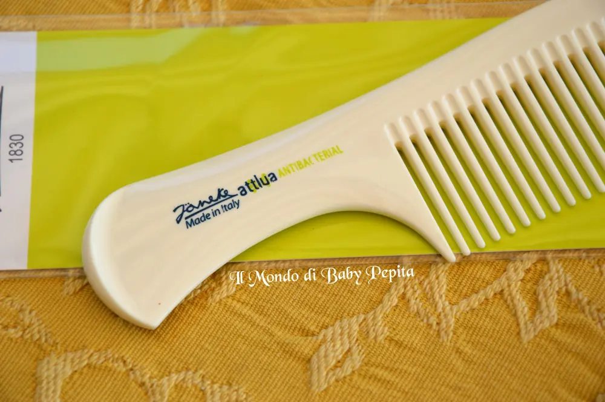

Janeke - il pettine che protegge

Sono un po’ in ritardo con l’appuntamento della settimana scorsa per la linea Janeke, ma niente paura. . Sono oggi qui a scrivervi per parlarvi di un altro articolo appunto firmato da questa azienda ormai leader nel campo della bellezza femminile ma non solo . .Infatti questo pomeriggio vi mostro un accessorio sia femminile che maschile, ossia un pettine.
Sono oggi qui a scrivervi per parlarvi di un altro articolo appunto firmato da questa azienda ormai leader nel campo della bellezza femminile ma non solo . .Infatti questo pomeriggio vi mostro un accessorio sia femminile che maschile, ossia un pettine.

Ma non un pettine qualsiasi, sappiamo che la Janeke pensa a tutto e come non poteva non pensare ai batteri e dunque all’igiene?
Sì, infatti questo pettine è antibatterico della Linea Attiva "Sanitized". .Con un’elevata resistenza ai lavaggi dunque questo pettine è anti micro, da usare in diversi ambienti, come anche la piscina, al mare o dovunque voi volete.Perché viene chiamato un pettine sanitized?
Con tale termine la Janeke ha voluto specificare che è un pettine (come tutta la linea, appunto, SANITIZED) che è costituto con sostanze batteriostatiche ciò vuol dire che impediscono il nutrimento dei germi per il cuoio capelluto proteggendo i nostri capelli da micro e batteri.

Tale pettine è composto da Sali d’argento che è la materia principale.Ottimo per capelli sia asciutti che bagnati, è costituito da una serie di dentelli dalla punta arrotondata abbastanza fitti che si dipartono perpendicolarmente da una costola che serve da impugnatura.

Questo può farvi rendere conto che sono prodotti adattissimi per la cute dei vostri bambini, quindi tenendo con voi i prodotti Janeke potrete stare sereni e spensierati dalle diverse forme di microbi che possono entrare a contatto con voi e con i vostri bimbi.
Da tenere dunque in borsetta, al mare, in piscina o in montagna senza aver paura di germi che possono attaccarsi dopo esserci pettinati, germi che potremo trovare sulla sabbia, in acqua o sul prato.
Prezzo: 13,00 €Se vi interessa leggere le altre cose belle che ho potuto provare di questa ormai nota marca vi elenco qui sotto i precedenti articoli:
specchietto da borsettapochettespazzola dorata rettangolarespazzola superbrushspazzola termica tondaspecchio da appoggio
Se siete interessati a tutta la linea sanitized questo è il sito della Janeke
Questa è la pagina facebook: https://www.facebook.com/janeke1830/?ref=ts&fref=ts

Per quanto riguarda me seguitemi qui:FACEBOOKINSTAGRAMTWITTER